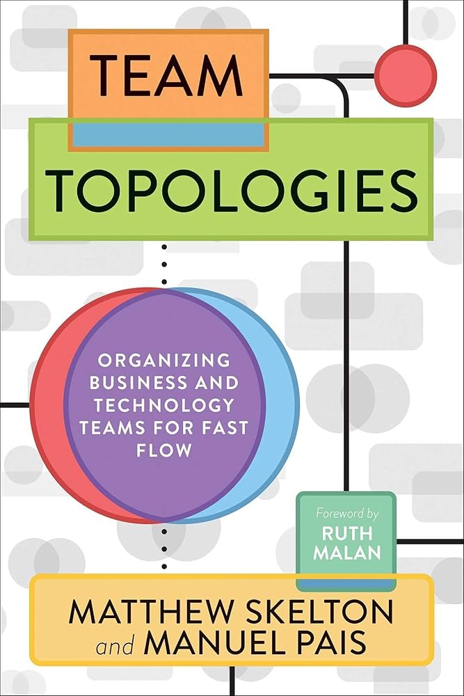

- Soft skills se referem a habilidades comportamentais relacionadas a maneira como uma pessoa lida com o outro.
- Quanto mais positivamente o profissional consegue lidar com situações ambientais e psicológicas, maiores são suas soft skills.
- São competências subjetivas, portanto, estão intimamente relacionadas à personalidade.
Exemplos
- Inteligência emocional
- Empatia
- Ética
- Liderança
- Solução de problemas
- Gerenciamento de tempo
Leitura
-

Topologies : Organizing Business and Technology Teams for Fast Flow
Site
-
 Thinking, Fast and Slow
Thinking, Fast and Slow
Livro